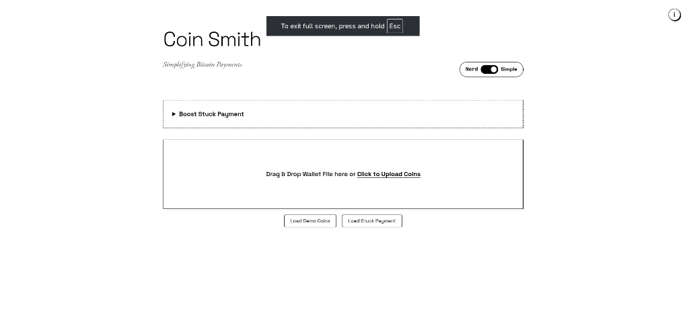

Coin Smith
A high-precision Bitcoin UTXO manager & PSBT builder. Optimized for fee efficiency (BnB/Knapsack), privacy analysis, and wallet safety. Supports RBF, Locktime, Taproot, and CPFP. Includes a web visualizer and CLI to justify and verify secure transactions. Bitcoin protocol-first correctness and defensive validation.